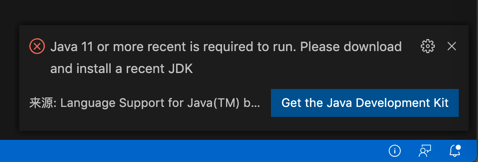
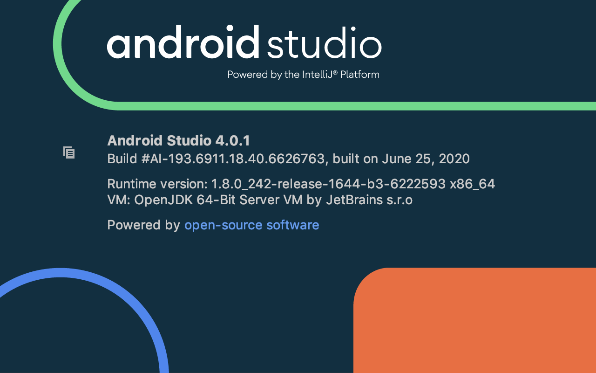
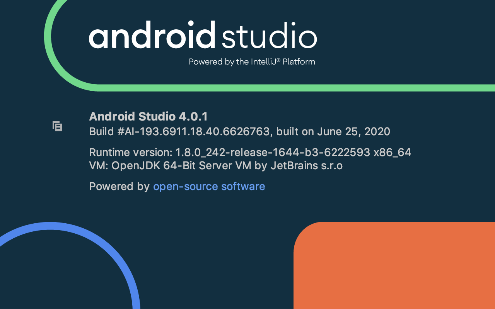

准备环境
确保当前系统环境已准备好：
Java
此处安装的版本是：1.8.0_212
相关信息：
~ java -version
java version "1.8.0_212"
Java(TM) SE Runtime Environment (build 1.8.0_212-b10)
Java HotSpot(TM) 64-Bit Server VM (build 25.212-b10, mixed mode)
和：
/usr/libexec/java_home -V
Matching Java Virtual Machines (1):
1.8.0_212, x86_64: "Java SE 8" /Library/Java/JavaVirtualMachines/jdk1.8.0_212.jdk/Contents/Home
/Library/Java/JavaVirtualMachines/jdk1.8.0_212.jdk/Contents/Home
其他说明：
- 记得安装后，把相关环境变量
export JAVA_HOME=$(/usr/libexec/java_home) export PATH=.:$PATH:$JAVA_HOME/bin export CLASSPATH=$JAVA_HOME/lib/tools.jar:$JAVA_HOME/lib/dt.jar:.- 加到启动脚本（此处是
.zhsrc）中
- 加到启动脚本（此处是
- 如果用VSCode打开
rcsjta后会提示Java 11 or more recent is required to run. Please download and install a recent JDK- 
- 可以忽略不理会
Android Studio
- 下载
- 从官网
- SDK 平台工具版本说明 | Android 开发者 | Android Developers
- 得到安装包
- 此处下载的是
Mac版android-studio-ide-193.6626763-mac.dmg
- 此处下载的是
- 正常安装即可
- 最新更新后版本
- 
Android Studio 4.0.1 Build #AI-193.6911.18.40.6626763, built on June 25, 2020 Runtime version: 1.8.0_242-release-1644-b3-6222593 x86_64 VM: OpenJDK 64-Bit Server VM by JetBrains s.r.o macOS 10.14.6 GC: ParNew, ConcurrentMarkSweep Memory: 1981M Cores: 8 Registry: ide.new.welcome.screen.force=true Non-Bundled Plugins:
- 
- 从官网
- 设置环境变量
- 然后把对应变量
export ANDROID_SDK_ROOT=/Users/limao/Library/Android/sdk PATH=$PATH:$ANDROID_SDK_ROOT/build-tools/29.0.2 PATH=$PATH:$ANDROID_SDK_ROOT/tools:$ANDROID_SDK_ROOT/platform-tools ANDROID_HOME=$ANDROID_SDK_ROOT - 加到启动脚本（此处是
~/.zshrc）中
- 然后把对应变量
- 下载
SDK- 然后在
Android Studio中下载对应所需版本的SDK
- 然后在
相关说明：
- 还是要加
ANDROID_HOME- 虽然官网 环境变量 | Android 开发者 | Android Developers已解释的很清楚
- 对于 设置 SDK 安装目录的路径 的环境变量：
- 旧的：ANDROID_HOME
- 已废弃
- 为了兼容，目前也还支持ANDROID_HOME而已
- 已废弃
- 新的：ANDROID_SDK_ROOT
- 建议用新的
- 旧的：ANDROID_HOME
- 但是上述还是要设置
ANDROID_HOME - 否则就会报错
A problem occurred configuring project SDK location not found